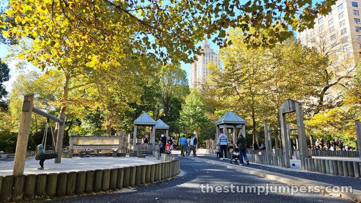
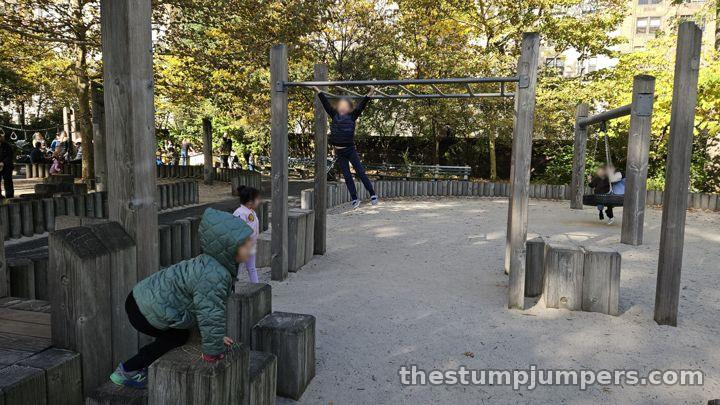
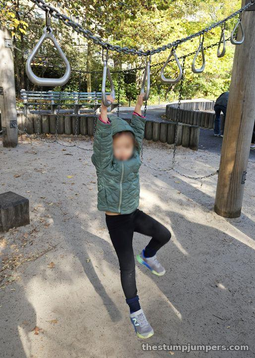
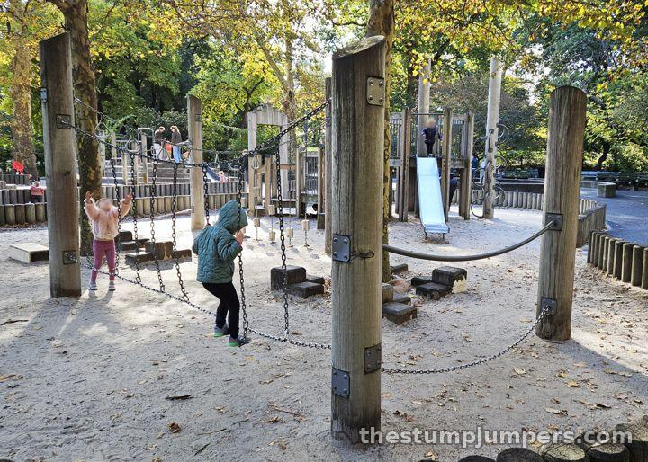
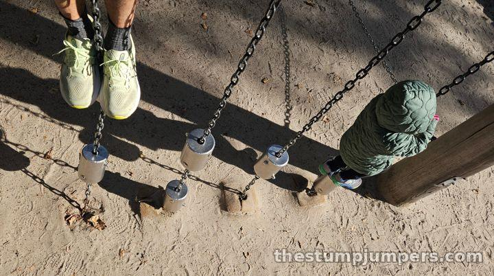
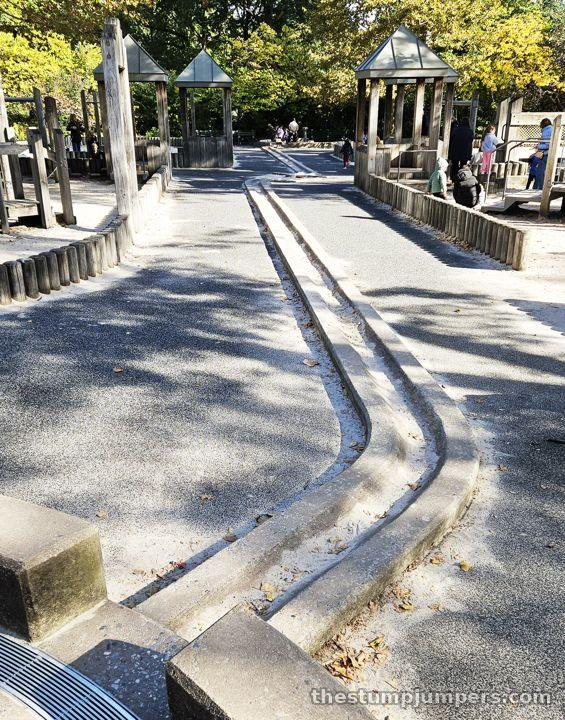
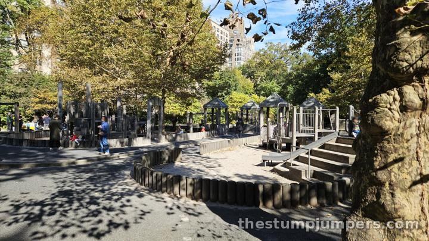
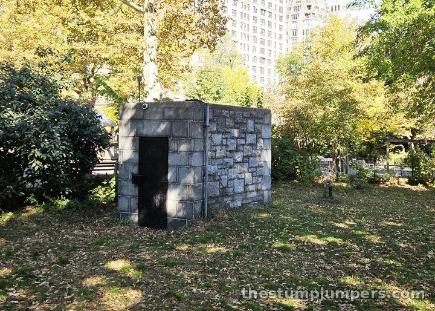

Tarr-Coyne Wild West Playground: The Not-So-Wild West

I was very disappointed that the Wild West Playground isn't actually Wild West themed. There are some round log stockades, and that's about it. I looked up pictures from before the 2015 renovation, and it used to look much more Western. That's a shame. At least there's almost no plastic. It's nearly all wood, and I like that.

It's one of many playgrounds along the west side of Central Park, near the West 93rd Street entrance, and one of several named after and funded by the Tarr family (see also Tarr-Coyne Tots and Tarr Family). Fun fact: the original 1988 design was by Richard Dattner, the same architect behind Adventure Playground.
The equipment is all a little… small. This playground is best for small kids, ages 2 to 5.


There are lots of chains, and I'm not sure what that's about. The tin-cans-on-a-chain thing is unique; I haven't seen one before. It's not all that fun, but at least it's novel.


The river down the middle is great. Kids love floating things down it. It's less a river and more a canal… which is exactly what they need at the Erie Canal Playground! Sure, it's turned off for half the year, but when it's dry it's fun to race trucks down. Fun for me, at least.

There's only one entrance, which gives you great visibility of the whole playground. You can sit on your butt and not worry. It's clean, too: no trash on the ground, just a few patch jobs and some missing swings.
Expect locals, and a private birthday party or two in a corner. It's very quiet during the week, somewhat busy on weekends, and never packed.

No bathroom. There's a little structure at the entrance that looks like a bathroom, but it's not. Maybe it's a mausoleum, because that's exactly what it looks like. Or one of the mole people's entrances to the underground tunnels.

Verdict: a quiet, wooden playground for the little ones, with a great canal. Just don't come expecting cowboys.
The Stump Report
Biking & Running There
On the run: that's how we came, with the BOB jogging stroller. It's not really visible from the main loop, but you can see it from Central Park West. By bike: the loop drive gets you close; head for the West 93rd Street entrance. By train: B or C to 96 St, then walk south to the 93rd Street entrance.